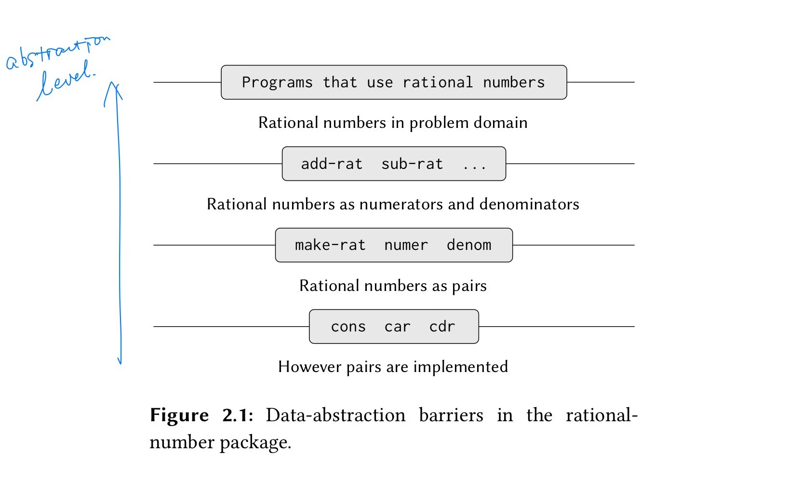

Code Here: Huffman Tree in Haskell
Haskell Implementation of Huffman Trees

Data Abstraction
type Weight = Int
data Symbol = A | B | C | D | E | F | G | H deriving Show
data HuffmanTree a = Empty |
Leaf a Weight |
Node (HuffmanTree a) (HuffmanTree a) [a] Weight
deriving Show
Symbol + Weight → Leaf
We encode symbols (Symbol / generic a) based on their frequency/weight (Weight), combining these two pieces of information into a Leaf abstraction, corresponding to SICP’s (define (make-leaf symbol weight) (list 'leaf symbol weight)).
Generic types and constraints: There are no type constraints on symbols. The weight constraint is that Weight belongs to the Ord typeclass because weights need to be comparable. Here we directly use Int as the weight type instead of making it generic.
Recursive Definition of HuffmanTree
Contains three constructors: Empty, Leaf, and Node:
Empty: Empty treeLeaf: Leaf node containing symbolaand weightWeightNode: Branch node containing left and right subtrees (HuffmanTree a), union of subtree symbols[a], and total subtree weightWeight.
Building the Huffman Tree
Getting Weight
Get the weight of Leaf，Node through pattern matching.
getWeight :: HuffmanTree a -> Weight
getWeight (Leaf _ w) = w
getWeight (Node _ _ _ w) = w
List Organization
The starting point for building a Huffman tree is an ordered list of leaves. During construction, the [HuffmanTree a] list needs to maintain order. The functions in this section aim to organize an unordered list into an ordered one.
» adjoinLeaf: Insert a HuffmanTree a into an existing ordered [HuffmanTree a] based on weight (ascending order).
» initLeafs: Organize an existing unordered leaf list into an ordered leaf list.
» moveFirstNode: During Huffman Tree construction, the Merge operation combines the two HuffmanTree (Leaf / Node) with smallest weights—the first two elements in the list—into a new Node. This function helps reposition the newly generated Node after merging.
adjoinTree :: HuffmanTree a -> [HuffmanTree a] -> [HuffmanTree a]
adjoinTree t [] = [t]
adjoinTree t (t':ts)
| w < w' = t: t': ts
| otherwise = t': (adjoinTree t ts)
where w = getWeight t
w' = getWeight t'
initLeafs :: [HuffmanTree a] -> [HuffmanTree a] -- I know pl(leaf) = leaves, btw. ^^
initLeafs [] = []
initLeafs (p:ps) = adjoinLeaf p (initLeafs ps)
moveFirstNode :: [HuffmanTree a] -> [HuffmanTree a]
moveFirstNode (t:ts) = adjoinLeaf t ts
Tree Construction
» makeNode: Combines two HuffmanTrees into a Node.
» constructHuffTree: Bottom-up tree construction, building the Huffman Tree using tail recursion.
-
Recursive step: Merge the first two elements in the current list into a parent
NodeusingmakeNode, move the parent node to get a new ordered list, and recursively process the new list. -
Base case: List contains only one element, which is the root node.
» initAndConstructHuffTree: Final encapsulation, using Point-less composition to combine leaf list initialization initLeafs and tree construction constructHuffTree.
makeNode :: HuffmanTree a -> HuffmanTree a -> HuffmanTree a
makeNode (Leaf s1 w1) (Leaf s2 w2) = Node (Leaf s1 w1) (Leaf s2 w2) [s1, s2] (w1 + w2)
makeNode (Leaf s w) (Node l r ss w') = Node (Leaf s w) (Node l r ss w') (s:ss) (w + w')
makeNode (Node l r ss w') (Leaf s w) = Node (Node l r ss w') (Leaf s w) (ss ++ [s]) (w + w')
makeNode (Node l1 r1 ss1 w1) (Node l2 r2 ss2 w2) = Node (Node l1 r1 ss1 w1) (Node l2 r2 ss2 w2) (ss1 ++ ss2) (w1 + w2)
constructHuffTree :: [HuffmanTree a] -> HuffmanTree a
constructHuffTree [] = Empty
constructHuffTree [t] = t
constructHuffTree (x:y:ts) = constructHuffTree $ moveFirstNode $ (makeNode x y): ts
initAndConstructHuffTree :: [HuffmanTree a] -> HuffmanTree a
initAndConstructHuffTree = constructHuffTree . initLeafs
Huffman Tree Encoding and Decoding
Getting Symbol Encoding
The process of building a Huffman tree is the encoding process itself. A node’s position in the tree represents its encoding. Here we present the encoding in binary form.
Encoding representation:
data Bit = L | R deriving Show
type Bits = [Bit]
L corresponds to binary 0, R corresponds to binary 1.
Getting the encoding involves traversing and recording the Huffman tree:
getCode' :: HuffmanTree a -> Bits -> [(a, Bits)]
getCode' (Node (Leaf s1 _) (Leaf s2 _) _ _) rec = [(s1, rec ++ [L]), (s2, rec ++ [R])]
getCode' (Node (Leaf s' _) node _ _) rec = [(s', rec ++ [L])] ++ getCode' node (rec++[R])
getCode' (Node node (Leaf s' _) _ _) rec = getCode' node (rec++[L]) ++ [(s', rec ++ [R])]
getCode' (Node nodel noder _ _) rec = getCode' nodel (rec++[L]) ++ getCode' noder (rec++[R])
getCode :: HuffmanTree a -> [(a, Bits)]
getCode t = getCode' t []
» getCode': Traverse the Huffman tree Recursively
-
Recursive step: For a node, match left and right subtrees, continue recursive traversal for non-leaf nodes (
node), recording branch directions inrec. -
Base case: When matching a
Leafin left/right subtree, it indicates reaching aSymbol. At this point,rec ++ [L]/rec ++ [R]is the encoding for thatSymbol. -
Pattern matching explanation: Reviewing the Huffman tree construction process, we always merge two nodes into their parent node, so there’s no case where a subtree is
Empty. Therefore, every branch node’s pattern isNode lhs rhs _ _. Also, we useLeafas the base case without recursing on it, which is why we only pattern match different forms of theNodeconstructor and put theLeafrecursive base cases first.
» getCode：Wraps getCode', giving rec an initial value of [], meaning no path record at the Huffman tree’s root node.
Decoding
Basic approach: Move through the tree based on Bit, L - move to left subtree, R - move to right subtree. When reaching a Leaf subtree, one character is decoded. Then return to the root node to continue decoding the next character until the Bit list is empty.
-- decode one symbol
decodeOne :: HuffmanTree a -> Bits -> (a, Bits)
decodeOne (Node (Leaf s _) _ _ _) (L:bs) = (s, bs)
decodeOne (Node _ (Leaf s _) _ _) (R:bs) = (s, bs)
decodeOne (Node node _ _ _) (L:bs) = decodeOne node bs
decodeOne (Node _ node _ _) (R:bs) = decodeOne node bs
-- decode from scratch
decode :: HuffmanTree a -> Bits -> [a]
decode _ [] = []
decode t bs =
let (s, remainBits) = decodeOne t bs
in s: decode t remainBits
» decodeOne:
-
Base case: When the current
Bit’s corresponding subtree is aLeaf, one character is decoded. Return that character and the remainingBits. -
Recursive step: When the current
Bit’s corresponding subtree is aNode, continue recursive decoding on thatNodeuntil reaching the base case.
» decode:
-
Base case: Empty
Bitlist means decoding is complete. -
Recursive step: For non-empty
Bitlist, pass the root node and currentBitlist todecodeOnefor single character decoding. After one character is decoded, continue decoding remainingBits from the root node until theBitlist is empty.
» How to return to root node:
Initially, the function signature I wrote was decode :: HuffmanTree a -> HuffmanTree a -> Bits -> [a], with two HuffmanTree parameters representing the original root node and current node. Implementation was roughly:
decode' :: HuffmanTree a -> HuffmanTree a -> Bits -> [a]
decode' originT (Node (Leaf s _) _ _ _) (L:bs) = s: (decode' originT originT bs)
--snip--
This didn’t feel quite right since the originT parameter never changed during recursion, so I slightly modified the recursive structure to write the above decode and decodeOne. SICP uses closures to remember the initial root node.
Structure and Destructure of Compound Data
SICP: Data, but Functions?
Consistency
We want to use structured data—rather than scattered variables—as program components, thus we have compound data like struct / class. The question then becomes how to extract the fields used to construct compound data. One thing extraction needs to ensure is consistency of fields before and after extraction. This is mainly the compiler’s work, but if we want to demonstrate this at the source code level, how can we do it? SICP 2.1.3 (Page 124) does it this way:
(define (cons x y)
(define (dispatch m)
(cond ((= m 0) x)
((= m 1) y)
(else (error "Argument not 0 or 1: CONS" m))))
dispatch)
(define (car z) (z 0))
(define (cdr z) (z 1))
Exercise 2.4 (Page 125) has an elegant implementation using lambda:
(define (cons x y)
(lambda (m) (m x y)))
(define (car z)
(z (lambda (p q) p)))
（For Pure Lambda Calculus implementation of this example, see the last section of this article.）
A key point this chapter of SICP emphasizes is: The boundary between data and procedures isn’t so clear-cut. The above two programs demonstrate this precisely: the list constructor returns a procedure that provides an interface to access the elements composing the list, which enables the definition of car / cdr.
Data Combination and Extraction → Program Construction: Abstraction Layer
Combination in LISP (LISt Programming) can be simple - data is combined by constructing lists, like (list 1 2 3) / (list 3 4 (list 9 7) 5), you can implement pair, tree, etc. with lists.
However, data within programs can’t directly flow between functions in this form, so we have abstraction layers:
Constructor (make-rat) and selector (denom, numer) represent one level of abstraction from primitive data types to compound data, giving programs (functions above this abstraction layer, like add-rat / sub-rat) a higher perspective to view data. Data is no longer just scattered integers/floats, but rat that can be constructed/extracted/analyzed. Functions above add-rat / sub-rat don’t need to care about rat’s implementation details, they just need to use operations like add-rat to solve problems. The process of program construction is a process of raising abstraction levels.
Haskell: Pattern Match
In Haskell, how do we handle the issue of data construction and extraction?
Construction:
The syntax for declaring compound data is:
data Point = Point Int Int
This defines the Point type with a constructor Point Int Int, which can then be used to construct compound data of type Point, like p = Point 1 2.
Extraction:
Pattern Match
A simple example:
getX :: Point -> Int
getX (Point x _) = x
Notably: How you construct the compound data (Point Int Int) is how you match it (Point x _). That is—how you structure is how you destructure.
One advantage of this syntax is that you can parse function parameters through Pattern Matching. For example:
constructHuffTree :: [HuffmanTree a] -> HuffmanTree a
constructHuffTree [] = ... -- empty leaf list → return empty tree
constructHuffTree [t] = ... -- only one leaf → return tree with just root node
constructHuffTree (x:y:ts) = ... -- two or more leaves → recursively build Huffman tree
This demonstrates that: The way function parameters are destructured determines the function’s behavior.
For example, consider this problem: counting the number of nodes in a binary tree
data Tree a = Empty | Node a (Tree a) (Tree a)
treeSize :: Tree a -> Int
treeSize Empty = 0
treeSize (Node _ left right) = 1 + treeSize left + treeSize right
-
Empty tree constructed with
Emptyconstructor → directly return0(base case) -
Non-empty tree constructed with
Nodeconstructor → solve recursively (recursive step)
How we construct data determines how we process it, and in Haskell, the form of constructing data matches the form of pattern matching on data, so we can do pattern matching in function parameter positions, with each pattern corresponding to a function behavior.
Lambda Calculus - pair abstraction
pair abstraction in Pure Lambda Calculus
上The example mentioned in the Consistencysection can be implemented in pure Lambda Calculus:1：
pair = λm λn λb. b m n
pair v w = λb. b v w
This abstraction provides this perspective: through two applications of pair, we instantiate m and n, determining the elements contained in the pair, leaving b as an interface for subsequent operations on the pair elements. To extract elements from the pair in order, we can define fst and snd:
fst = λa λb. a
snd = λa λb. b
(pair v w) fst → v // parentheses here can be omitted , according to left associativity convention
(pair v w) snd → w
If you prefer programming style like fst (pair v w), that’s also possible:
tru = λt λf. t // α-equivalent to `fst` defined in previous code block, we can understand the same abstraction differently
fls = λt λf. f // ... `snd` ...
fst = λp. p tru
snd = λp. p fls
fst (pair v w) → v
snd (pair v w) → w
Let’s examine this abstraction again: pair = λm λn λb. b m n. In Lambda Calculus, what we commonly call functions are termed abstractions, and this pair abstraction provides an abstraction over the construction and operation of pairs. We first determine the contained elements through outer parameters m and n to build the pair, then use inner parameter b to execute operations on the existing elements. From this perspective, pair naturally possesses the ability to interact with other functions (abstractions) within the Lambda Calculus system, because after instantiating the pair elements, it provides the interaction interface b, waiting for other abstractions to interact with the pair’s existing elements through application.
-
Types and Programming Languages - Chapter 5 The Untyped Lambda-Calculus ↩︎